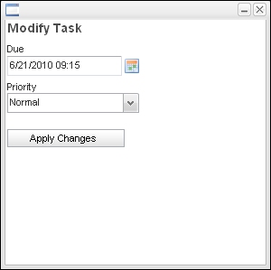

Worklist Manager
The Worklist Manager report displays a list of pending worklist items that can require user action. By default, the top pane of the Worklist provides end users with options to filter a returned list of user tasks.
For more information, see the Velocity Studio User Guide.
By performing a search (that is, clicking the Search button), pending worklist items display in the details pane. The Worklist Manager can be configured to display in the Worklist Management application or in the application provided that the user has the correct permissions.
The Worklist Manager search results section displays the following information:
| Field | Description | ||||||||||||
|---|---|---|---|---|---|---|---|---|---|---|---|---|---|
| Icon Column | This field indicates the task type:
The style of the task record indicates whether the task has been started yet (bold) or is overdue (red), or a combination of the two. The task record styles as well as the task icons indicate whether a task is an alert or a regular task. Alerns appear in blue font and taken tasks are greyed out. |
||||||||||||
| Due Date | This field contains the date and time when the worklist task is due. | ||||||||||||
| Participant | This field denotes the participant assigned to the task. | ||||||||||||
| User ID | This field represents the ID of the user assigned to the task. | ||||||||||||
| Task | Description of the task. | ||||||||||||
| Label | The metadata label name of the task. | ||||||||||||
| Create Date | Date and time when the task was created. | ||||||||||||
| Assigned Date | Date and time when the task was assigned. | ||||||||||||
| Start Date | Date and time when the task was started. |


Note: The first column (before Due Date) represents the task's priority.
Worklist Control Menu
The controls for the worklist manger provide you with the following functionality:
| Menu Item | Function |
|---|---|
| Search | Searches the database for worklist items based on the search criteria. |
| Task | Activates a Task dialog displaying the Order Item associated with the selected task. |
| Assign | Activates a Worklist Users dialog displaying a list of users that can be associated with the selected task. |
| Modify | Activates a Modify Task dialog allowing the user to modify the due date and priority of the selected task. |
| Order | Activates a dialog displaying the Order associated with the selected task. |
| History | Activates a Task History dialog displaying a log of changes made to the selected task. |
Task
The Task dialog is activated from within the Worklist Manager report, and displays the Order and Order Item associated with the selected task.
Assign
The Assign dialog is activated from within the Worklist Manager report, and displays the Order and Order Item associated with the selected task.
The following information is available:
| Field | Description |
|---|---|
| ID | ID of the selected worklist user. |
| Name | Name of the selected worklist user. |
| Active | Indicates whether the selected worklist user is active or not. |
| Available | Indicates whether the selected worklist user is available or not. |
| E-mail of the selected worklist user. | |
| External ID | User ID used for purposes outside of the product system. |
| Minimum Tasks | Smallest amount of tasks the selected worklist user can have assigned. |
| Maximum Tasks | Largest amount of tasks the selected worklist user can have assigned. |
| Current Tasks | Number of tasks assigned to the user. |
Modify
The Modify Task dialog, activated from within the Worklist Manager report, allows the user to modify the due date and priority of the selected task.
|  |
The following information is available:
| Field | Description |
|---|---|
| Due | Date and time to which the task due date will be changed. |
| Priority | Lists the possible priority settings. |
| Apply Changes | Saves the changes indicated in the above fields. |
History
The Task History dialog, activated from within the Worklist Manager report, displays a log of changes made to the selected task.
The following information is available:
| Field | Description |
|---|---|
| Changed by | Name of the user who made changes to the task. |
| Changed on | Date and time when the change was made. |
| User ID | New task user ID value. |
| Due | New task due date value. |
| Priority | New task priority value. |
| Operation | Description of the change. |
Worklist Users
The Worklist Users report displays a list of active users.
The following information is available:
| Field | Description |
|---|---|
| Av | Indicates whether the user is available or not. |
| User ID | ID of the user. |
| Tasks | Number of tasks assigned to the user. |
| Overdue Tasks | Number of overdue tasks assigned to the user. |
| Alerts | Number of alerts assigned to the user. |
Worklist Users Control Menu
The controls for the worklist manger provide you with the following functionality:
| Menu Item | Function |
|---|---|
| Search | Searches the database for users based on the search criteria. |
| User Profile | Activates a User dialog displaying information about the selected user. |
| Tasks | Activates a User Worklist dialog displaying a list of tasks assigned to the selected user. |
| Available | Sets the selected user as available for additional tasks. |
| Unavailable | Sets the selected user as unavailable for additional tasks. |
Note: The top two records of the Worklist Users report results display a summary which is not affected by the search criteria entered. The summary always displays the total number of assigned/unassigned tasks under the User ID of <assigned> and <unassigned>.
User Profile
The User dialog , activated from within the Worklist Users report, displays information about the selected user.
| Field | Description |
|---|---|
| ID | ID of the selected worklist user. |
| Name | Name of the selected worklist user. |
| Active | Indicates whether the selected worklist user is active or not. |
| Available | Indicates whether the selected worklist user is available or not. |
| E-mail of the selected worklist user. | |
| External User | Indicates if the worklist uses external systems. |
| Minimum Tasks | Smallest amount of tasks the selected worklist user can have assigned. |
| Maximum Tasks | Largest amount of tasks the selected worklist user can have assigned. |
| Current Tasks | Number of tasks assigned to the user. |
| Position | Select a position from the drop-down list. |
Groups
The Groups dialog displays the group to which the user belongs.
- From the Worklist page, click a User ID.
- Next click User Profile button.
- Click the Groups tab.
- Use the button functionality to modify the group.
Tasks
The User Worklist dialog, activated from within the Worklist Users report, displays a list of tasks assigned to the selected user.
 |
| Field | Description |
|---|---|
| Due | Date and time when the worklist item is due. |
| Task | Description of the worklist item. |
| Details | Order details for the worklist item. |
| Assigned | Date and time when the worklist item was assigned. |
| Started | Date and time when the worklist item was started. |
Participants
The Participants report displays a list of participants with pending tasks. In the Profile Administration, under Worklist, the Participants menu item launches the Participants page.
| Field | Description |
|---|---|
| Participant | Name of participant. |
| Tasks | Number of worklist items assigned to the participant. |
| Overdue | Number of overdue worklist items assigned to the participant. |
| Unassigned | Number of worklist items assigned to the participant but not assigned to any users. |
| Alerts | Number of alerts assigned to the participant. |
Participant Control Menu
| Menu Item | Function |
|---|---|
| Search | Searches the database for participants. |
| Users | Activates a Worklist Users dialog displaying a list of users associated with the selected participant. |
| Tasks | Activates a Worklist Manager dialog displaying a list of worklist items associated with the selected participant. |